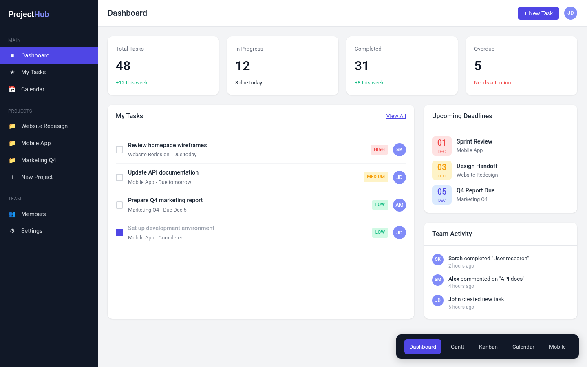
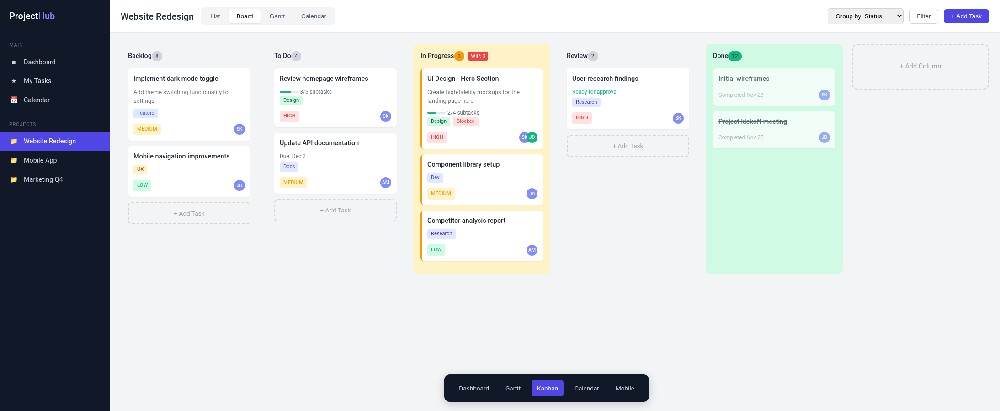
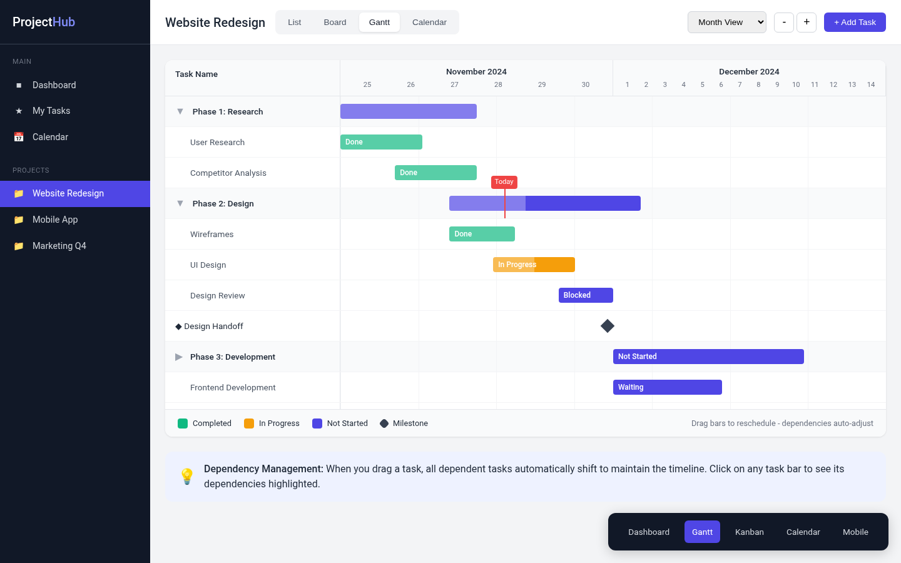
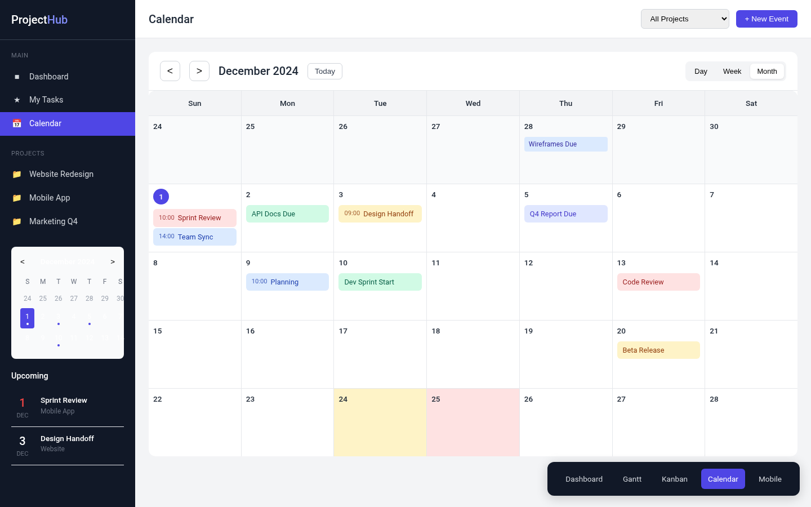
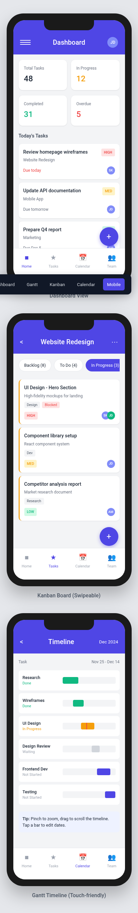

Design source for ProjectHub — a self-hosted project management app with Kanban, Gantt, calendar, and mobile views. These wireframes predate the implementation by several weeks; the production app's structure, naming, and component layout follow them directly.




